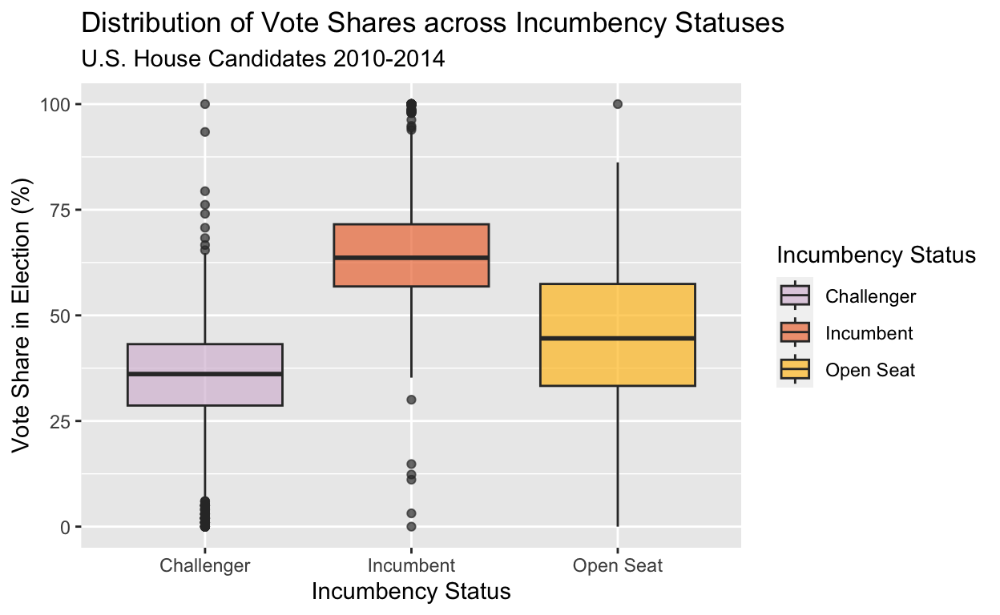
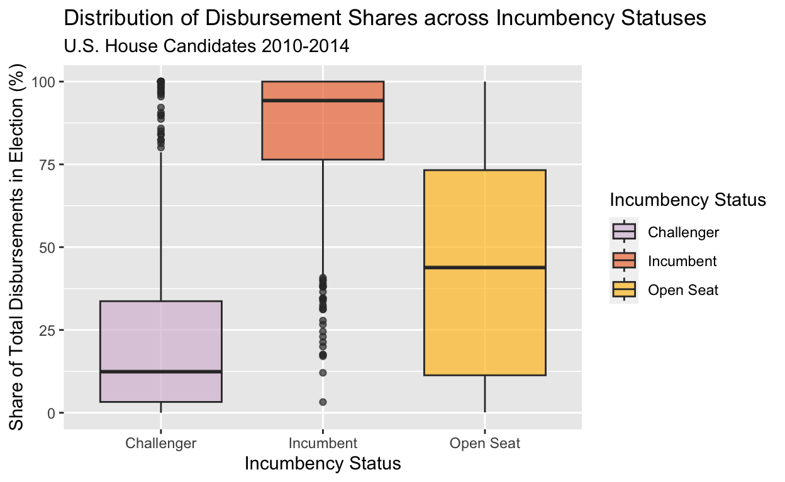
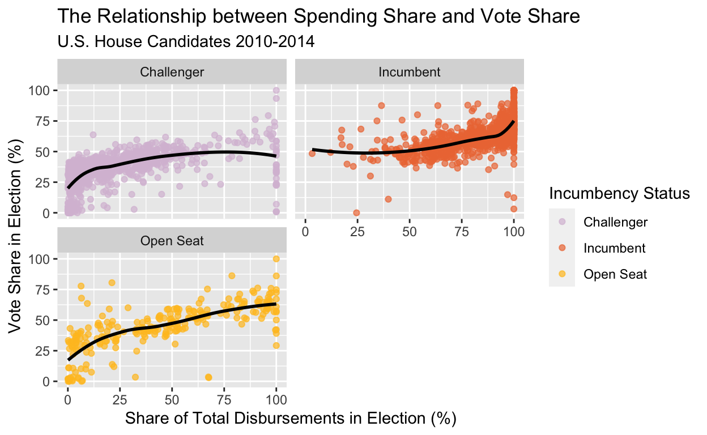

Gov50 Final Project
# Loading Bonica's dataset
dime <- read_csv("dime_recipients_scale.csv")
# Narrowing data to be House candidates from 2010-2014, Filtering out NA and unknown vote shares, making a numeric vote share variable
dime_house_1014 <- dime |>
filter(fecyear >= 2010 & fecyear <=2014) |>
filter(seat == "federal:house") |>
filter(!is.na(gen.elect.pct)) |>
filter(gen.elect.pct != "??") |>
mutate(gen.elect.pct.num = as.numeric(gen.elect.pct))
# Create unique ID for each election
dime_house_1014 <- dime_house_1014 |>
mutate(elec_id = paste0(election, district))
# Select only relevant variables for dataset
dime_house_1014 <- dime_house_1014 |>
select(elec_id, name, seat, party, state, district, Incum.Chall, total.disbursements, winner, gen.elect.pct.num)
glimpse(dime_house_1014)Rows: 2,314
Columns: 10
$ elec_id <chr> "fd2010VA11", "fd2010UT01", "fd2010TX18"…
$ name <chr> "fimian, keith s.", "bowen, morgan emory…
$ seat <chr> "federal:house", "federal:house", "feder…
$ party <dbl> 200, 100, 200, 100, 328, 100, 100, 100, …
$ state <chr> "VA", "UT", "TX", "TX", "TN", "SC", "SC"…
$ district <chr> "VA11", "UT01", "TX18", "TX12", "TN05", …
$ Incum.Chall <chr> "C", "C", "C", "C", "C", "C", "O", "C", …
$ total.disbursements <dbl> 2869716.96, 11309.00, 262544.13, 7445.00…
$ winner <chr> "L", "L", "L", "L", "L", "L", "L", "L", …
$ gen.elect.pct.num <dbl> 48.79, 23.93, 27.26, 25.13, 0.00, 28.79,…# Create new dataset with total disbursements for each election (across all candidates)
dime_house_elec_total <- dime_house_1014 |>
group_by(elec_id) |>
summarize(total_elec_disb = sum(total.disbursements),
.groups = 'drop')
# Merge new dataset with previous to add total election disbursements as a column
dime_house_1014 <- inner_join(dime_house_1014, dime_house_elec_total)
# Create percentage disbursement share for each candidate
dime_house_1014 <- dime_house_1014 |>
mutate(disbursement_pct_num = (total.disbursements/total_elec_disb)*100)
# Convert numeric into factor for party variable
dime_house_1014 <- dime_house_1014 |>
mutate(party = case_when(party == 100 ~ "Democrat",
party == 200 ~ "Republican",
party == 328 ~ "Independent"))
# Rewrite incumbency status variable to be clearer
dime_house_1014 <- dime_house_1014 |>
mutate(Incum.Chall = case_when(Incum.Chall == "I" ~ "Incumbent",
Incum.Chall == "C" ~ "Challenger",
Incum.Chall == "O" ~ "Open Seat"))
dime_house_1014# A tibble: 2,314 × 12
elec_id name seat party state distr…¹ Incum…² total…³ winner
<chr> <chr> <chr> <chr> <chr> <chr> <chr> <dbl> <chr>
1 fd2010VA11 fimian… fede… Repu… VA VA11 Challe… 2.87e6 L
2 fd2010UT01 bowen,… fede… Demo… UT UT01 Challe… 1.13e4 L
3 fd2010TX18 faulk,… fede… Repu… TX TX18 Challe… 2.63e5 L
4 fd2010TX12 smith,… fede… Demo… TX TX12 Challe… 7.44e3 L
5 fd2010TN05 miglie… fede… Inde… TN TN05 Challe… 2.03e3 L
6 fd2010SC04 corden… fede… Demo… SC SC04 Challe… 1.79e4 L
7 fd2010SC03 dyer, … fede… Demo… SC SC03 Open S… 2.73e5 L
8 fd2010SC02 miller… fede… Demo… SC SC02 Challe… 3.14e6 L
9 fd2010RI02 zaccar… fede… Repu… RI RI02 Challe… 1.86e5 L
10 fd2010OR03 lopez,… fede… Repu… OR OR03 Challe… 1.34e5 L
# … with 2,304 more rows, 3 more variables: gen.elect.pct.num <dbl>,
# total_elec_disb <dbl>, disbursement_pct_num <dbl>, and
# abbreviated variable names ¹district, ²Incum.Chall,
# ³total.disbursementsThe Supreme Court case Citizens United v. Federal Election Commission of 2010 was a momentous decision in campaign finance with many citing it as promoting lobbying and corporate interest in American politics. In essence, a 5-4 majority deemed that limiting independent political spending was a violation of the First Amendment’s right to free speech. Rendering previous campaign finance restrictions unconstitutional and void, corporations and other outside groups could now spend unlimited funds on elections. According to Open Secrets, the decade after Citizens United was the most expensive in the history of United States elections. Non-party independent groups spent $4.5 billion on elections from 2010 - 2020: for the two decades prior, the total was just $750 million.
Much of the current research into campaign finance focuses on how funds are spent or the sources of funds and their impact on candidates’ voting records. This analysis will instead focus on the relationship between campaign spending and vote share in a particular election. Do candidates that spend more than their competitors garner more votes? What is the correlation between a candidate’s share of the total amount of spending in an election and their vote share in the general election? If there is a relationship between share of spending and vote share, what is its statistical significance? That is, does money talk?
I hypothesize that the greater a candidate’s percentage share of total campaign spending, the greater their percentage vote share in the general election. The conclusion on this hypothesis could answer a number of other questions related to campaign spending and election outcomes as well. For example, if there is a positive correlation between campaign spending and election outcomes in vote share, we could determine that, on average, the highest-spending candidate is also the one with the most votes.
Data is particularly useful to investigate this question because it provides measurable insight into the magnitude of the effect of money on political “winningness”. If the correlation between a candidate’s percentage share of total election spending and candidate’s vote share is strong in either the positive or negative direction, we could get a better idea of how spending works to impact the ability of a candidate to garner votes. If there is no apparent correlation, it would be interesting to investigate why campaign donations seem to increase when there does not seem to be much of a correlation between spending and the ability to garner votes. Involving the incumbency status of candidates into the relationship between spending and vote share could provide insight into incumbents and spending trends.
With the sheer amount of money that is now being funneled to U.S. elections, it is compelling — and important — to examine the extent to which spending is a determinant of success. The answer to this bears its own normative considerations on the role that money and corporate interest play in our democracy.
The data is drawn from the work of Stanford University Professor Adam Bonica. In 2016, he published Version 2.0 of the Database on Ideology, Money in Politics and Elections (DIME), which contains over 130 million political contributions to local, state, and federal elections from over the years 1979 - 2014. Bonica generated a corresponding database of the recipients of such political contributions, which include both PACs (political action committees) and individual candidates. For the sake of this analysis, the scope will be limited to the database of donation recipients that are individual candidates because they are ultimately who the money is meant to help. Bonica pulled contribution records, candidate and committee filings, and election outcomes for federal elections from the data made available by the Federal Election Commission. This dataset contains 176,777 candidates, PACs, political organizations, and party committees at the state and federal levels.
While Bonica’s database is more than generous, the variables on which this analysis will focus are the following:
| Variable | Description |
|---|---|
| elec_id* | An identification variable used to mark each unique election based on year and district |
| name | Name of candidate |
| party | Democrat, Republican, Independent |
| state | State in which candidate ran |
| seat | Office for which candidate ran |
| district | District for which candidate ran |
| Incum.Chall | Incumbent, Challenger, Open Seat |
| total.disbursements | Total amount of money spent on campaign by a candidate, in USD |
| winner | W = Won race, L = Lost race |
| gen.elect.pct.num* | Vote share in general election, in percentage |
| total_elec_disb* | Total amount of disbursements by all candidates in a given election |
| disbursement_pct_num* | A candidate’s share of total disbursements in election |
* variables I generated/calculated through coding Prof. Bonica’s original database
As mentioned previously, data is provided by the Federal Election Commission, which collects campaign finance information through its legal requirement on all campaigns to provide finance reports. The Federal Election Commission compiles election outcome data itself from all certified federal election results. I coded and calculated the independent variable of a candidate’s share of total election disbursements from the original database’s variable of total.disbursements for each candidate. The dependent variable of general election percentage vote share is drawn from Bonica’s database (I converted it from a factor to numerical variable). The aforementioned variables are continuous and numerical. I will also involve incumbency status as a categorical independent variable to determine to what extent it is confounding in the relationship of interest.
The sample narrowed the database to focus on United States House of Representatives general elections from the years of 2010-2014 to provide both simplicity and comparable variation between candidates of like offices. The unit of analysis is a House of Representatives candidate. The explanatory variable is a candidate’s percentage share of total disbursements in a House election. The outcome variable is the vote share of a particular candidate in the general House election. The data was filtered to exclude candidates who did not run in a general election or candidates whose vote share was marked as “NA” or unknown in the original dataset. The resulting workable dataset includes 2,314 general election candidates for office in the United States House of Representatives from the years 2010 - 2014.
The design of this study is cross-sectional. I am examining the vote share and spending share of a candidate in a singular election; in other words, we are observing a subject at a singular point in time. Evaluating candidates in a cross-sectional study is ideal here because it allows me to easily compare the impact that spending has on vote shares across subjects who are running for the same office at relatively the same point in time.
# Distribution of Dependent Variable - Percentage Vote Share
dependent_distribution <- dime_house_1014 |>
ggplot(mapping = aes(x = Incum.Chall,
y = gen.elect.pct.num,
fill = Incum.Chall)) +
geom_boxplot(alpha = .7) +
scale_fill_manual("Incumbency Status", values = c("thistle", "sienna2", "goldenrod1")) +
labs(title = "Distribution of Vote Shares across Incumbency Statuses",
subtitle = "U.S. House Candidates 2010-2014",
x = "Incumbency Status",
y = "Vote Share in Election (%)")
dependent_distribution
The dependent variable I am investigating throughout this analysis is percentage vote share for a given candidate. While it does not provide much useful information to evaluate its distribution alone, it could be useful to visualize vote shares within incumbency statuses. Here, we see that incumbents generally have greater vote shares than challengers (the majority of the incumbent boxplot distribution is above the challenger boxplot distribution); we also see that the majority of incumbents earn vote shares that are well above a simple majority. This helps us determine that incumbency status is a covariate because it itself may determine vote shares for a candidate.
# Distribution of Independent Variable - Percentage Spending Share
spending_distribution <- dime_house_1014 |>
ggplot(mapping = aes(x = Incum.Chall,
y = disbursement_pct_num,
fill = Incum.Chall)) +
geom_boxplot(alpha = .7) +
scale_fill_manual("Incumbency Status", values = c("thistle", "sienna2", "goldenrod1")) +
labs(title = "Distribution of Disbursement Shares across Incumbency Statuses",
subtitle = "U.S. House Candidates 2010-2014",
x = "Incumbency Status",
y = "Share of Total Disbursements in Election (%)")
spending_distribution
This distribution of a candidate’s share of total disbursements in an election demonstrates that there is a heavy favoring toward incumbents over challengers in terms of spending. The boxplot distributions show that incumbents as a whole heavily outspend challengers in terms of share of total disbursements in an election. For open seats where there is not an incumbent running for reelection, the boxplot distribution is much more evenly spread across shares of spending. This is intuitive because open races would not be favored toward the incumbent and both funding and spending would, on average, be more evenly distributed among candidates (not accounting for district ideology or other covariates).
To visualize the relationship between the spending share of a U.S. House candidate and their vote share in the election, a scatterplot was created. Points on the scatterplot are color-coded, then faceted based on incumbency status to evaluate how that plays into the relationship.
# Visualize the relationship between vote share and spending share
main_relationship_plot <- dime_house_1014 |>
ggplot(mapping = aes(x = disbursement_pct_num,
y = gen.elect.pct.num,
color = Incum.Chall)) +
scale_color_manual("Incumbency Status", values = c("thistle", "sienna2", "goldenrod1")) +
geom_point(alpha = .7) +
geom_smooth(se = FALSE, method = "loess", color = "black") +
labs(title = "The Relationship between Spending Share and Vote Share",
subtitle = "U.S. House Candidates 2010-2014",
x = "Share of Total Disbursements in Election (%)",
y = "Vote Share in Election (%)")
main_relationship_plot # Facet the main relationship visualization by incumbency status
main_relationship_plot_faceted <- dime_house_1014 |>
ggplot(mapping = aes(x = disbursement_pct_num,
y = gen.elect.pct.num,
color = Incum.Chall)) +
scale_color_manual("Incumbency Status", values = c("thistle", "sienna2", "goldenrod1")) +
facet_wrap(~ Incum.Chall, nrow = 2) +
geom_point(alpha = .7) +
geom_smooth(se = FALSE, method = "loess", color = "black") +
labs(title = "The Relationship between Spending Share and Vote Share",
subtitle = "U.S. House Candidates 2010-2014",
x = "Share of Total Disbursements in Election (%)",
y = "Vote Share in Election (%)")
main_relationship_plot_faceted
Across all plots, the relationship between a candidate’s share of total disbursements in an election and their vote share in that election appears to be positive and moderate in strength. The faceted plots that show the relationship within each incumbency status are helpful in determining the strength of this relationship across various types of candidates. For challenger candidates, the majority of data points are below 50% on both metrics, suggesting that in the majority of cases challengers do not gain a simple majority vote share nor do they spend a simple majority of total funds for all candidates in an election. The opposite seems to be true for incumbents with the majority of data points being above 50% thresholds for vote and spending shares. For open seat candidates, the data appears relatively even spread across all percentage shares of votes and disbursements, yet there still exists a positive relationship.
# Multiple regression model for spending share, incumbency status on vote share, releveling open seat as baseline
reg_vote_spend_share <- lm(gen.elect.pct.num ~ disbursement_pct_num + relevel(factor(Incum.Chall),
ref = "Open Seat"),
data = dime_house_1014)
# Rename rows in modelsummary table; could not use coef_rename because of quotes in relevel() function argument
names(reg_vote_spend_share$coefficients) <- c('Intercept',
'Share of Total Disbursements in Election',
'Incumbency Status - Challenger',
'Incumbency Status - Incumbent')
# Model Summary for multiple regression model
reg_vote_spend_share_table <- modelsummary::modelsummary(reg_vote_spend_share, stars = TRUE,
statistic = c("s.e. = {std.error}",
"p = {p.value}"),
note = "Outcome = Vote Share (%)",
gof_map = c("nobs", "r.squared", "adj.r.squared"),
title = "Linear Regression for the Effect of Spending Share on Vote Share")
reg_vote_spend_share_table| Model 1 | |
|---|---|
| Intercept | 26.747*** |
| s.e. = 0.891 | |
| p = <0.001 | |
| Share of Total Disbursements in Election | 0.378*** |
| s.e. = 0.011 | |
| p = <0.001 | |
| Incumbency Status - Challenger | −0.287 |
| s.e. = 0.875 | |
| p = 0.743 | |
| Incumbency Status - Incumbent | 5.743*** |
| s.e. = 0.938 | |
| p = <0.001 | |
| Num.Obs. | 2314 |
| R2 | 0.675 |
| R2 Adj. | 0.675 |
| + p < 0.1, * p < 0.05, ** p < 0.01, *** p < 0.001 | |
| Outcome = Vote Share (%) |
In this multiple linear regression model, the intercept of approximately 26.7% represents the average percent vote share of a candidate in a general U.S. House of Representatives election whose spending makes up 0% of spending by all candidates in the election (essentially spending $0 on the campaign) and is competing in an open seat race.
5.743 represents the average difference in vote share between Incumbents and Open Seat candidates, holding the spending share variable fixed. This coefficient holds a p-value of less than .001 and is extremely statistically significant.
-.287 represents the average difference in vote share between Challengers and Open Seat candidates, holding the spending share variable fixed. This coefficient holds a p-value of .743 and is not statistically significant.
The main coefficient of interest: On average, for a candidate’s additional percentage increase in the share of total disbursements (by all candidates in an election), their vote share rises by about .378%, holding incumbency status fixed. This coefficient holds a p-value of less than .001, which is extremely statistically significant. To establish causality, we must determine that (1) the cause comes before the effect, (2) the relationship is not due to chance, and (3) there are no other confounding variables. The relationship meets the first condition because campaigns spend money leading up to the election, so vote share comes after spending. It has met the second condition through the p-test that determined extreme statistical significance. After controlling for incumbency status (which many believe to be the single greatest determinant for a candidate to win an election), the relationship meets the third condition. Therefore, we determine that spending share and vote share in U.S. House of Representatives general elections are causally linked: that a greater share of total disbursements by all candidates in a race results in a greater vote share in that election.
From the sample of 2,314 general election candidates for office in the United States House of Representatives from the years 2010 - 2014, I conclude that there exists a moderate, positive relationship between the percentage share a candidate has of total amount spent by all candidates in the same race and the candidate’s percentage vote share. After the conditions of temporality, non-spurious nature, and minimal confounding, spending share and vote share are casually linked. A greater share of total spending in an election results in a greater vote share for that election. As such, the candidate that spends the most is generally the one that wins the most votes. This relationship accounted for incumbency status because it is widely considered to be the greatest determinant of whether a candidate wins an election or not. It was also notable to point out that incumbents generally had much greater spending shares than challenger candidates. Finally, this analysis supports my original hypothesis that the greater a candidate’s percentage share of total campaign spending, the greater their percentage vote share in the general election.
Despite this, there are still many ways to improve this study of the relationship between spending share and vote share. For one, Bonica’s variable total.disbursements (around which I built the study) reflects only the spending made by the candidates’ campaigns themselves; in reality, there other sources of spending to promote a particular candidate’s campaign. PACs spend their funds to promote a candidate though such spending is not included in the campaign finance report a candidate submits to the FEC. Data would be more accurate if it reflected spending for a candidate’s campaign from all sources. In addition, the sample was limited to House races in the years 2010-2014; this could certainly be expanded to include the latter half of the 2010s to capture record highs of campaign funding and spending. It could also be useful to include Senate races or examine if this effect holds true for local and state campaigns. Lastly, the only covariate involved was incumbency status, but the ideal study would involve more confounding variables; one such variable could be a measure of dissonance between candidate’s ideology and the average political ideology within the district. Controlling for more covariates would solidify the causal relationship between spending share and vote share.
While this study helps answer some positive questions surrounding campaign spending and political success, it opens up a number of normative concerns on the role that money plays in American democracy. As federal campaigns become more and more expensive, it seems to many that the threshold to become a candidate for United States political office is a financial one. Many worry that money holds greater weight on the political process than votes themselves.
Adam Bonica Dataset Citation: Bonica, Adam. 2016. Database on Ideology, Money in Politics, and Elections: Public version 2.0 [Computer file]. Stanford, CA: Stanford University Libraries. <https://data.stanford.edu/dime>;